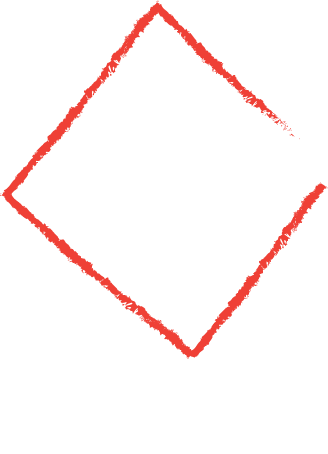

Home
About Us
All Products
Quiz
Contact Us
Cart
Close
Welcome to the Sports Quiz!
Let's check your knowledge!
What does NBA stand for?
Net Ball Association
National Basketball Association
National Baseball Association
National Balling Association
In meters, how big is an Olympic-sized swimming pool?
50 meters long and 30 meters wide
25 meters long and 50 meters wide
50 meters long and 25 meters wide
40 meters long and 20 meters wide
Which of the following sports does not use a ball? Golf, tennis, hockey, or polo?
Hockey
Polo
Golf
Tennis
In what year were women allowed to compete in the modern Olympic games and in what sport?
1948, gymnastics
1900, tennis
1901, badminton
1920, netball
How many minutes was the longest recorded point in the history of tennis?
21 minutes
1 hour 4 minutes
15 minutes
29 minutes
During the first-ever modern Olympics, what were the first placers awarded with?
Gold medal
Copper medal
Silver medal
Iron medal
How many Olympic games were held in countries that no longer exist?
2
6
3
0
Who was the youngest player to score 10,000 points in the NBA?
Michael Jordan
LeBron James
Kobe Bryant
Kevin Durant
What was the first city to host the Olympics twice?
Paris
Australia
USA
China
Where did the first ancient Olympic games take place?
Paris
Madrid
New York
Greece
Start Quiz
Submit Answers